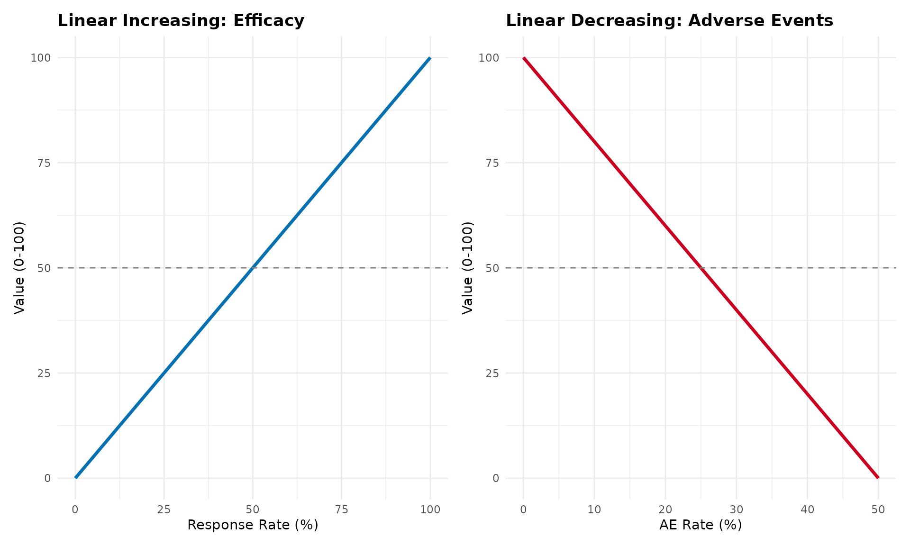
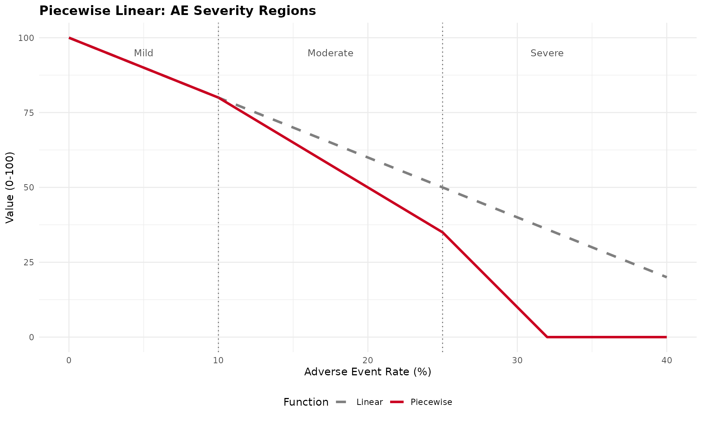
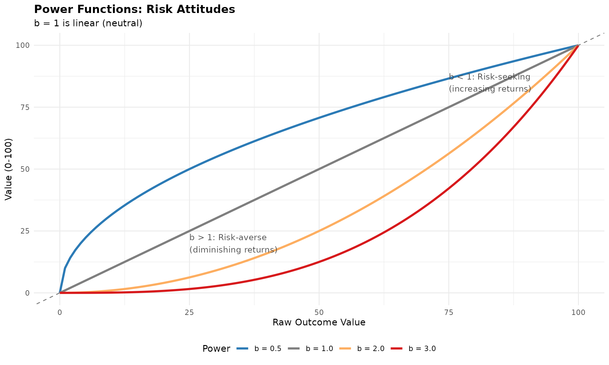
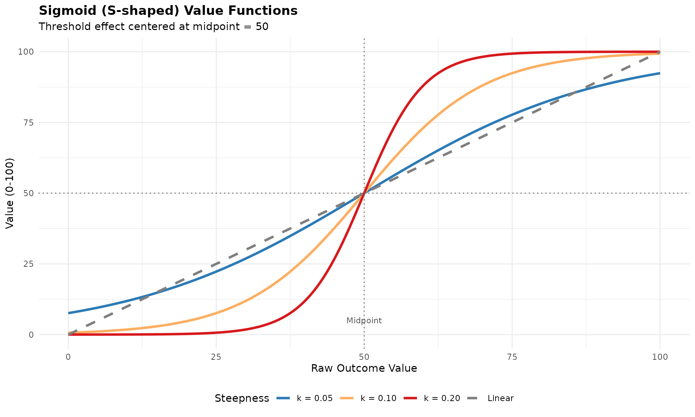
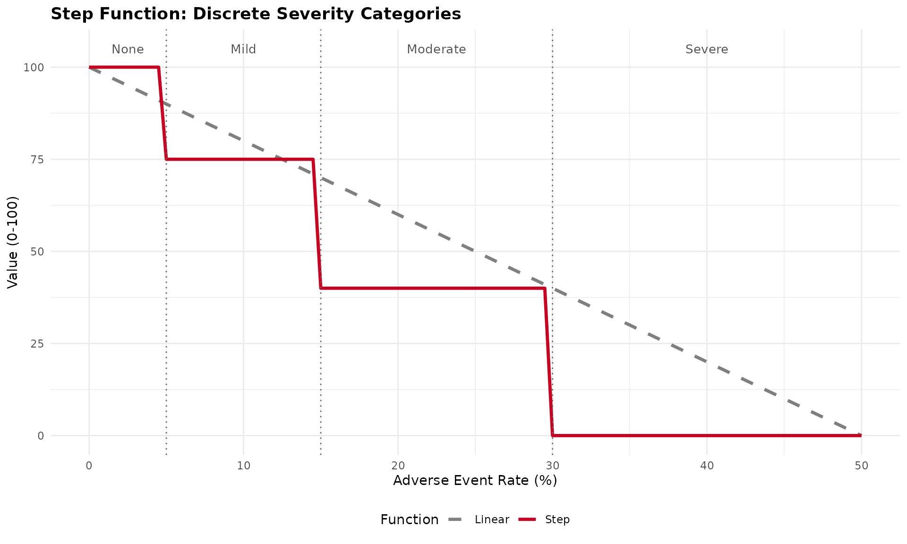
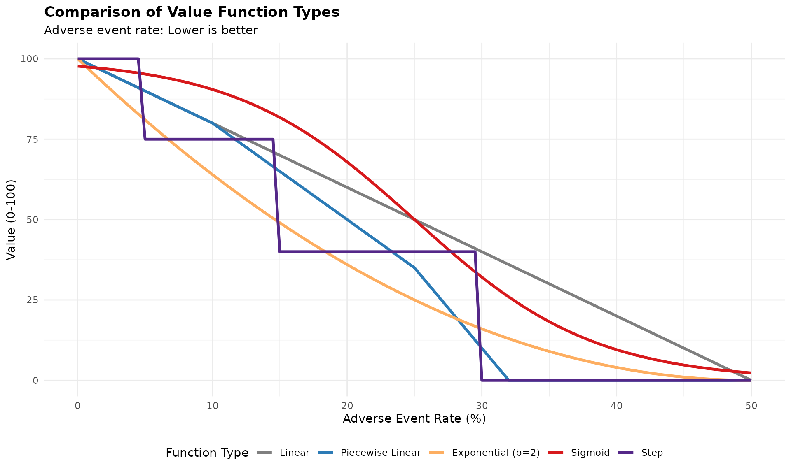
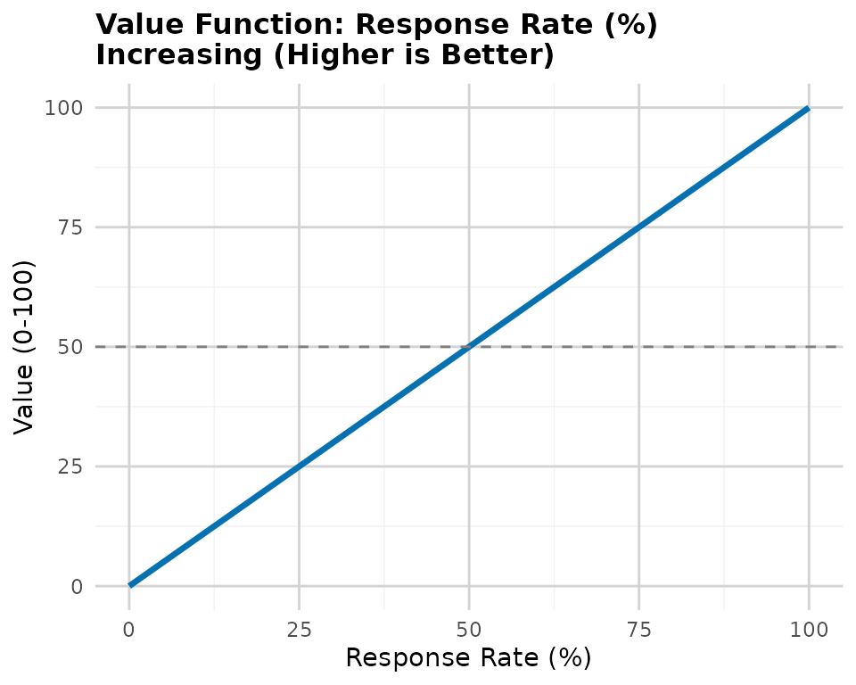
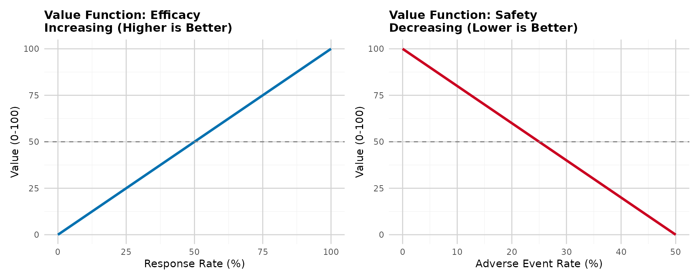
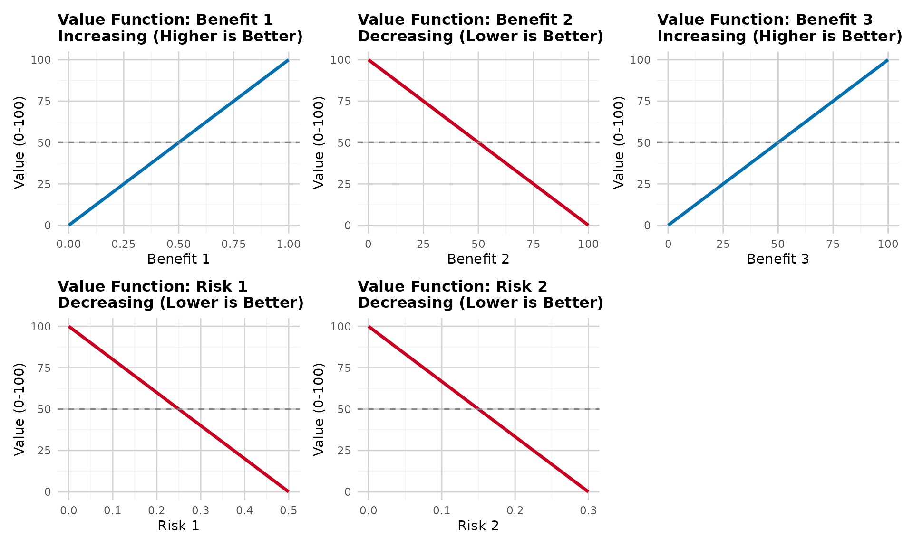
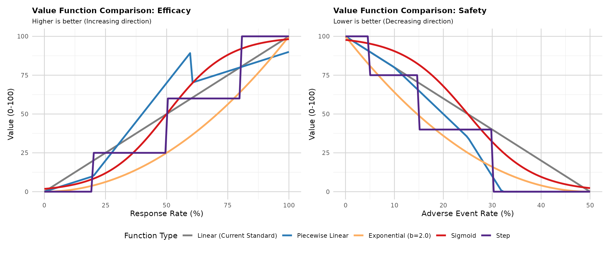

MCDA Value Function Types
mcda-value-function-types.RmdIntroduction
Value functions are mathematical transformations that convert raw clinical outcome values into a standardized scale (typically 0-100) representing “value” or “desirability” from a decision-making perspective. The choice of value function reflects stakeholder preferences about how outcomes are valued.
Why Value Functions Matter
Consider an adverse event rate: - Linear: Going from 10% to 20% AE rate has the same negative value as 20% to 30% - Exponential: Going from 10% to 20% is concerning, but 20% to 30% is dramatically worse - Threshold: Below 15% is acceptable (value=100), above 15% is unacceptable (value=0)
The choice affects benefit-risk conclusions and should reflect clinical reality and stakeholder preferences.
Value Function Types
1. Linear Value Functions (Current Standard)
Description: Constant marginal value - each unit change has equal importance
Increasing direction (higher is better, e.g., efficacy):
Decreasing direction (lower is better, e.g., adverse events):

When to use: - Default choice (FDA/EMA recommendation) - No strong evidence of non-linear preferences - Transparency and simplicity are priorities - Most clinical outcomes
Advantages: - Simple and interpretable - Transparent calculations - Regulatory acceptance - Conservative (neutral) assumptions
Disadvantages: - May not reflect true stakeholder preferences - Assumes equal marginal value across range
2. Piecewise Linear Value Functions
Description: Different slopes in different regions, connected at breakpoints

When to use: - Clinical guidelines define severity categories (mild/moderate/severe) - Regulatory thresholds exist (acceptable/concerning/unacceptable) - Stakeholders value ranges differently - MCID (Minimally Clinically Important Difference) creates natural breakpoints
Example applications: - QoL scales with clinical interpretation bands - Lab values with normal/borderline/abnormal ranges - Dose levels with safety thresholds
Advantages: - Captures clinical interpretation thresholds - More flexible than linear - Still relatively transparent - Can match stakeholder preferences better
Disadvantages: - More parameters to justify - Arbitrary breakpoint placement needs rationale - More complex than linear
3. Exponential/Power Value Functions
Description: Curved relationship reflecting risk attitudes
Risk-averse (diminishing returns), b > 1:
Risk-seeking (increasing returns), 0 < b < 1:

When to use: - Stakeholder elicitation reveals non-linear preferences - Diminishing returns clinically meaningful (first 50% efficacy more valuable) - Severity increases exponentially (rare but catastrophic events) - Utility theory supports risk attitudes
Example applications: - Mortality (each life equally valuable - linear or power=1) - Quality of life (diminishing returns at high levels) - Rare serious AEs (exponential concern)
Advantages: - Captures risk attitudes - Single parameter (power) to adjust - Smooth and differentiable
Disadvantages: - Requires justification for non-linearity - Power parameter selection subjective - Less transparent than linear
4. Sigmoid (S-shaped) Value Functions
Description: Slow change at extremes, rapid change in middle

When to use: - Threshold effects (outcome “tips” at clinical cutpoint) - Very low/high values matter less than mid-range - Psychological preferences show S-shaped patterns - Binary clinical decisions with gray zone
Example applications: - Biomarkers with clinical interpretation thresholds - PROs with “clinically meaningful change” bands - Dose-response with therapeutic window
Advantages: - Captures threshold effects - Smooth transition (no sharp jumps) - Biologically/clinically realistic for many outcomes
Disadvantages: - Two parameters (midpoint, steepness) to justify - Can be complex to explain - Requires clear rationale for threshold location
5. Step Functions (Discrete Categories)
Description: Discrete value levels for categorical outcomes

When to use: - Outcomes are inherently categorical (CTCAE grades) - Clinical practice uses discrete classifications - No meaningful distinction within categories - Regulatory guidance defines categories
Example applications: - CTCAE toxicity grades (1-5) - ECOG performance status (0-4) - Disease severity classifications
Advantages: - Matches clinical practice - Simple interpretation - Natural for categorical data
Disadvantages: - Ignores variation within categories - Sharp discontinuities may not reflect reality - Can be sensitive to threshold placement
Comparing Value Functions
Let’s visualize all function types for the same outcome:

Key observations: - Linear: Constant concern across all levels - Piecewise: Different concern in different ranges - Exponential: Increasing concern (risk-averse) - Sigmoid: Threshold effect at ~25% - Step: Categorical interpretation
Regulatory and Practical Considerations
FDA/EMA Guidance
Default recommendation: Linear value functions - Transparent and conservative - Neutral assumption (no risk attitude imposed) - Easiest to justify and explain
When non-linear may be acceptable: 1. Strong clinical/theoretical rationale 2. Validated through stakeholder elicitation 3. Pre-specified in analysis plan 4. Sensitivity analysis shows robustness 5. Documented justification
Selection Criteria
Clinical validity: - Does the function match clinical understanding? - Are there clinical thresholds or categories? - Do clinicians think linearly or non-linearly about this outcome?
Stakeholder preferences: - Elicit preferences using standard techniques - Choice experiments - Swing weighting - Direct function specification
Data requirements: - Linear: Only min/max thresholds - Piecewise: Breakpoints and slopes - Exponential: Power parameter - Sigmoid: Midpoint and steepness - Step: Category thresholds and values
Interpretability: - Can you explain it to regulators? - Can patients understand it? - Does it make intuitive sense?
Recommendations
1. Start with Linear
- Default choice unless clear rationale for non-linear
- Easiest to justify and defend
- Regulatory preference
2. Consider Non-linear When:
- Clinical thresholds exist (→ piecewise or step)
- Stakeholder preferences clearly non-linear (→ power or sigmoid)
- Strong theoretical rationale (→ appropriate function type)
- Validated through preference elicitation
3. Document Everything
- Rationale for function choice
- Parameter selection process
- Stakeholder input
- Sensitivity analyses
- Clinical interpretation
References
Methodological
- Thokala P, et al. (2016). Multiple criteria decision analysis for health care decision making. Value in Health, 19(1):1-13.
- Keeney RL, Raiffa H. (1993). Decisions with Multiple Objectives: Preferences and Value Trade-Offs. Cambridge University Press.
- Dyer JS, Sarin RK. (1979). Measurable multiattribute value functions. Operations Research, 27(4):810-822.
Regulatory
- FDA. (2013). Structured Approach to Benefit-Risk Assessment in Drug Regulatory Decision-Making.
- EMA. (2011). Benefit-Risk Methodology Project: Report of the BRMWP Task Force.
- PROTECT. (2012). Work Package 5: Benefit-Risk Integration and Representation.
Applications
- Mussen F, et al. (2007). Structured benefit-risk assessment for medicinal products. Pharmacoepidemiol Drug Saf, 16(S1):S2-15.
- Mt-Isa S, et al. (2014). Balancing benefit and risk of medicines. Clinical Pharmacology & Therapeutics, 96(4):438-446.
- Levitan B, et al. (2018). Application of the BRAT framework to case studies. Pharmacoepidemiol Drug Saf, 27(11):1223-1234.
Implementation Note
The current brpubVJCE package implements linear
value functions by default, which is consistent with FDA/EMA
guidance and provides a transparent, conservative approach to
benefit-risk assessment.
If you need to implement alternative value functions for specific applications, the examples in this vignette provide the mathematical framework. Always ensure proper documentation and justification for non-linear choices.
Package Functions for Value Function Visualization
The brpubVJCE package now includes dedicated functions
for visualizing linear value functions used in MCDA analyses:
Single Value Function Plot
Create a plot showing how raw values transform to normalized scores (0-100):

Compare Benefits vs Risks
Create side-by-side comparison showing the different normalization directions:

Visualize All MCDA Criteria
Create a multi-panel plot for all criteria in your clinical scales:

Compare Linear to Alternative Value Function Types
Create comparison plots showing how linear functions compare to other approaches (piecewise, exponential, sigmoid, step) for both benefits and risks:

This visualization helps stakeholders understand: - How the linear function (current standard, shown in gray) provides a neutral, transparent approach - How alternative functions would transform the same clinical data differently - Why regulatory agencies prefer linear functions (simplicity, transparency, no imposed risk attitudes) - The potential impact of choosing non-linear approaches on benefit-risk conclusions
Key observations: - Linear (Current Standard): Equal marginal value across all levels - regulatory preference - Piecewise Linear: Different slopes in different regions - useful when clinical thresholds exist - Exponential: Captures diminishing returns or increasing concern - requires stakeholder justification - Sigmoid: Threshold effects with smooth transitions - useful for binary clinical interpretations - Step: Discrete categories - matches categorical clinical practice (e.g., CTCAE grades)
These functions help communicate the MCDA normalization process to stakeholders and demonstrate the linear value function approach used throughout the package.